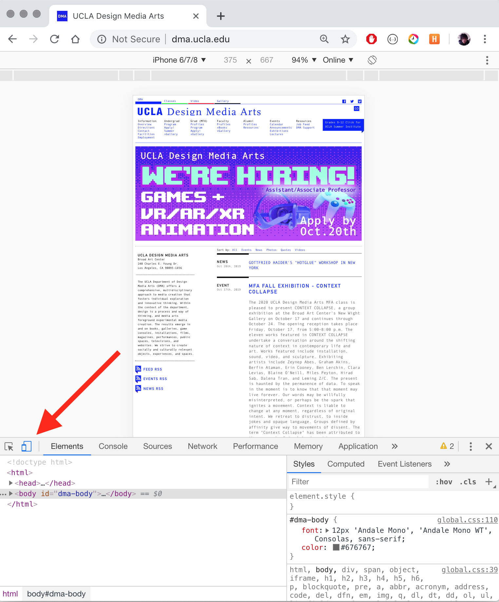
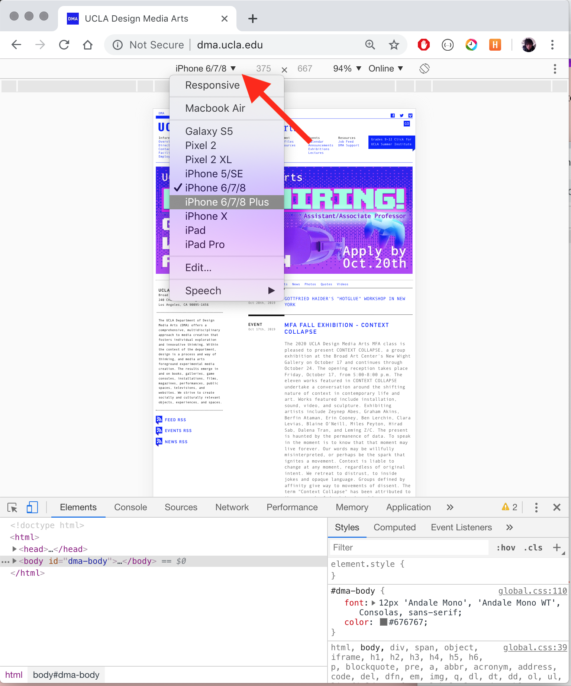

DESMA161: Network Media
PREVIEWING MOBILE SITES IN CHROME
- Right click anywhere on your page and click "Select".

- You should see a panel open on the bottom or side of your window. Click the mobile icon. 
- Click the dropdown next to the device name in the top of the window to select other sizes. 